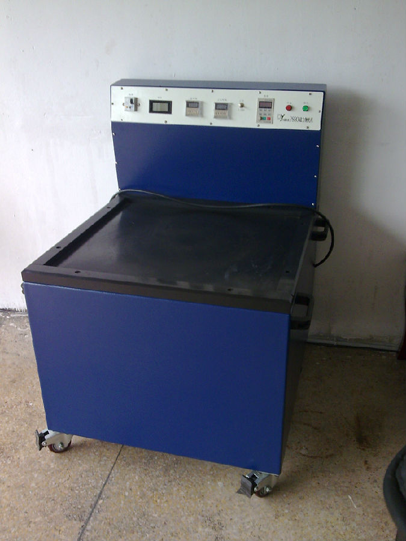
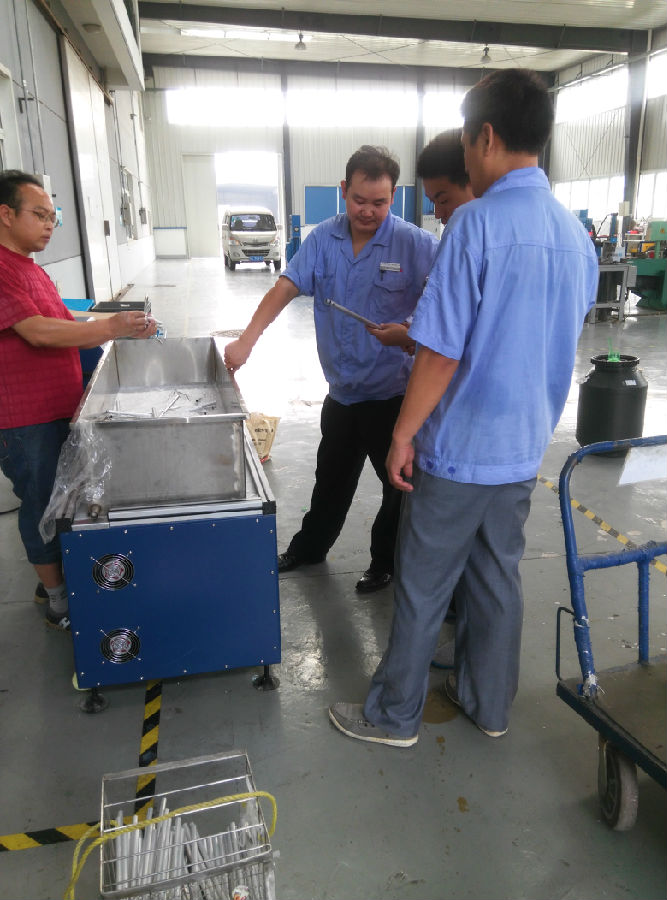

磁力抛光机|磁力研磨机|精密零件去毛刺机|自动内孔抛光机


精密表面内孔清洗抛光,并达去毛刺.
去毛刺抛光研磨机后不影响产品精密尺寸,不变形,高效提高产品品质.
简介
产品概述： 突破传统抛光理念，采用磁场力拖动不锈钢针，产生快速旋转运动，从而达到去除毛刺,抛光,洗净等多重效果。 产品通过精心设计而成，磁场分布均匀，磁场拖动力自动顺、逆转，抛光效果更均匀，物体表面更光滑，是节省人力开支提高工作效率的首选！机型规格可按客户要求定制。
●成品去除毛刺;
●表面锈蚀处理；
●成品表面抛光；
●打磨洗净工作；
●去除氧化薄膜（不会损害工件表面形状）
● 首饰工艺品；
● 自动车床零件；
● 压铸、冲压零件；
● 弹簧、弹片零件;
● 电子、通信、医疗零件
● 走心，走刀，CNC自动车床零件
● 航天，医疗零件
● 硬塑料、硬塑胶
适用于金,银,铜,铝,锌,镁,铁,不锈钢等金属类与硬质塑料等非金属类工件的研磨抛光。如：金银首饰、时尚配饰、电子产品金属制件，精密螺栓、形状复杂的金属制件、文具配件、仪表仪器配
工件经此类抛光机处理后表面呈原金属光泽，光亮、圆润极具视觉效果；还可释放一部分工件内应力，提高工件机械性能；强化工件表面质量，提高表面性能。提升产品价值！
工作原理
磁力抛光机是利用其独特的磁场分布,产生强劲平稳的磁感效应，使磁力钢针与工件进行全方位,多角度地充分研磨，达到快速除锈,去死角,去除毛刺批锋,除去氧化薄膜及烧结痕迹等功效。尤其对形状复杂,多孔夹缝，内外螺纹等工件，更加能显示其神奇妙用.并且，不伤及工件表面，不影响工件精度。让工件瞬间变得光滑整洁，焕然一新。适用于金,银,铜,铝,锌,镁,铁,不锈钢等金属类与硬质塑料等非金属类工件的研磨抛光及去毛刺。
●适用于轻铁类金属,非铁类金属,硬质塑胶等精密零件
●实现除毛刺,倒角,抛光,洗净等多重功效
●对于不规则状零件,孔状、管状等死角,夹缝等均可抛光
●定制时间，加工速度快捷,操作简单安全
●可变频率调节，满足各种抛光需求
●抛光无死角
●结束提醒，可提醒抛光完成，可一人操作多台
●电压、电流、频率、时间均可监控，简洁明了
●抛光过程无需人工干预
●磁力抛光研磨没有死角，让所有部位完全研磨；研磨后工件绝不变形、绝不损伤表面、绝不影响精度。
●成本低，速度快，约2-20分钟完成；操作简单、方便、完全免技术，可多机操作。
1、 相比其他布轮抛光机等抛光设备，磁力抛光机可批量工件抛光处理，完成抛光后可用筛网批量和钢针分离开来，大大提高工作效率和抛光效果。
2、 磁力抛光机针对小五金件，小饰品等死角，内孔处理效果极佳。可达到清除灰尘，去除毛刺，提高产品表面光亮度，去除表面氧化层，这是其他类型抛光设备无法比拟的特点。
3、 磁力抛光机操作简单，可一人同时操作多台设备，节省成本。
4、 磁力抛光机采用抛光液和钢针，再加上适当自来水来批量抛光工件，不带酸碱性的污水便于处理。
1：因为采用石头形状磨料或钢珠，根本不能做到对内孔，凹凸面、死角、内外螺纹的清洗抛光。只能是表面上的一些处理。
2：抛光抛光时间慢一般要几个小时工作才能完成。
3:成本高，采用石头形状磨料，经过一段时间研磨，需要更换。
4：容易损坏工件，使工件变形，影响精密度
开启机器后，将工件由少倒多放入抛光桶，工件的多少和重量和工件的体型有及到的关系，所以工件慢慢放入到增加，倒工件旋转减慢，但是不可以工件不动，当工件不动旋转时，抛光出来的产品液将不均匀，抛光时间也会随之不必要的加长。
抛光前，一定要将工件的表面油垢清理，抛光液是无法去除大量的油垢的，否则工件，抛光针，水，抛光桶将可能发黑。清理抛光针、抛光桶时必须要使用清洗液。
1：抛光桶漏水，底刺有抛光针可用钳子去除，加点上胶水
2：计时器不闪动，未按启动开关，按即可计时。
3: 抛光桶里的水过热时请及时换水（正常水温范围在50°C）。
4: 机器震动大，检查机器每个角是否在受力位置，调整长短。
5：指示正常，但机器不工作，检查电压是否低于220V；抛光针放置是否过量。
1：抛光液溅到机器上应及时擦拭干净，防止液体损伤机器表面。
2：使用后用抹布擦干净机器表面
3：不使用时控制面板用胶袋套住，这样可用防尘防污。
4：放桶时，抛光槽内若有抛光针，要及时清理。
1：请勿将液体和水，溅入电线和插头上。2：在W型号机电源需加装过流开关，建议选用6A以上。
3: 开启电源后注意查看后盖的冷风散热风扇是否正常运转。
4：P型机不要在长时间低频下工作，雷电可能导致损坏机器。
磁力抛光机使用说明
1.水位调节:
理论上,抛光时候,水少可以节省抛光液,有便以抛光工件的往下的压力(水有浮力)建议工件体大,轻,时候.
水尽量少.对于实芯工件,重,的时候,建议水可以适当加多,有利益工件的上浮.
2.时间调节
初次试验,时间设定有产品的要求决定,抛光时间长,效果将好,但前题是不损坏工件的情况下.
3.力度(频率)调节:
力度的大小和加工效率成正比例.力大,去毛边能力强,但容易将工件表面抛成雾(类似喷沙)形状.但反光,亮度会增加.
TAG: